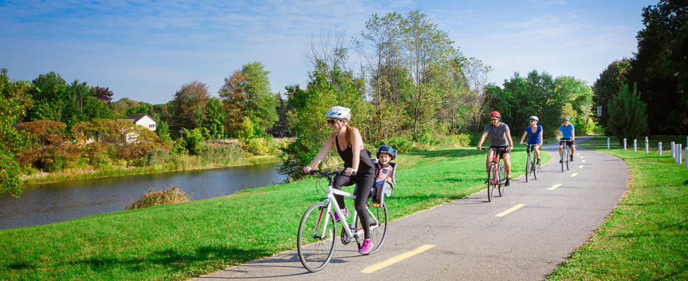
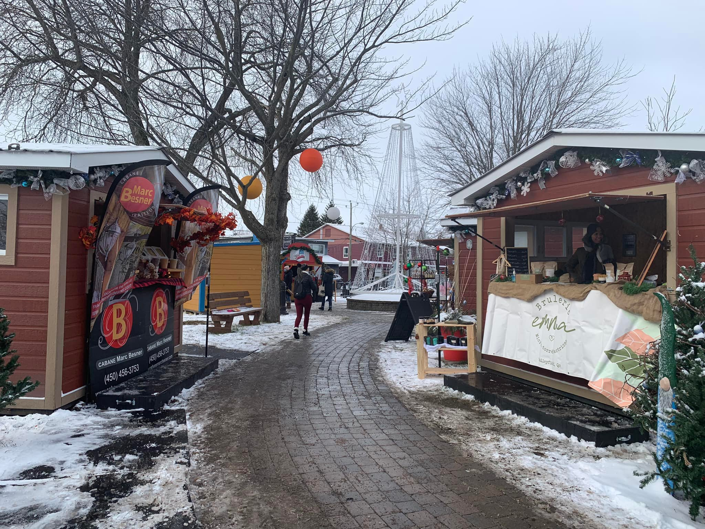
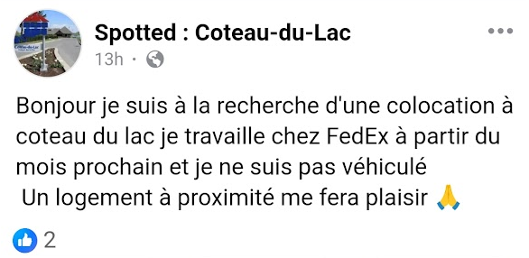

Découvrez comment les principes modernes d'urbanisme peuvent transformer notre ville en un lieu plus vivable, plus durable et plus dynamique pour tous les citoyens.
Un urbanisme centré sur l'humain
Adoptons les meilleures pratiques d'urbanisme pour créer des espaces qui favorisent la qualité de vie, la santé et le bien-être de tous les résidents.
Coteau-du-Lac possède déjà des atouts majeurs pour la mobilité active, avec sa piste cyclable au bord du Canal de Soulanges et le magnifique Chemin du Fleuve au sud. Notre vision : créer un réseau cyclable cohérent qui relie ces deux axes et revitalise le noyau villageois.
Création de liens cyclables nord-sud sécuritaires
Amélioration de la piste cyclable du Chemin du Fleuve
Transformation du noyau villageois en zone conviviale pour vélos
Installation de supports à vélos près des commerces
En rendant la ville plus accessible à vélo, nous permettrons aux citoyens de profiter pleinement des commerces locaux et des attraits naturels tout en réduisant leur dépendance à l'automobile.


Soutenir notre économie locale
Un noyau villageois dynamique et des quartiers bien pensés peuvent grandement contribuer à la prospérité de nos commerces et industries locales. En créant un environnement propice aux affaires tout en améliorant la qualité de vie, nous pouvons stimuler l'économie locale.
Densification intelligente du noyau villageois pour augmenter l'achalandage
Allègement des taxes et réglementations pour les commerces locaux
Expansion des événements comme le Marché de Noël qui mettent en valeur nos producteurs locaux
Développement de logements abordables pour loger les ouvriers d'ici
Service de navettes pour les travailleurs industriels
En combinant développement urbain intelligent et soutien aux entreprises, nous pouvons créer un cercle vertueux où commerces locaux et résidents prospèrent ensemble.

C'est des petites actions faciles qui vont aider des travailleurs comme lui
Garder le caractère de notre ville
Mais ça va être laid!
La crise du logement touche tout le Québec, et notre région n’y échappe pas. La MRC de Vaudreuil-Soulanges nous demande d’atteindre des objectifs clairs de densité — dans notre cas, 20 logements par hectare — afin de contribuer à répondre aux besoins en habitation. Dans ce contexte, la véritable question n’est pas de savoir si nous allons réaliser des projets résidentiels : c’est une obligation à laquelle nous devons nous conformer. Ce qui est entre nos mains, c’est de décider où ces projets auront lieu et comment ils seront réalisés. Nous voulons saisir cette occasion pour planifier un développement qui respecte notre identité villageoise, qui s’intègre harmonieusement à notre territoire et qui contribue à offrir des logements de qualité aux familles, aux aînés et aux jeunes de notre communauté.
Contrairement à ce qui s’est fait à Saint-Zotique, où de grandes tours à condos ont été construites sans réelle intégration au paysage et à l’identité locale, la densification à Coteau-du-Lac peut prendre une tout autre forme. Il est important de réfléchir collectivement à des solutions qui respecteront le caractère humain de la ville et préserveront son identité. La croissance peut se faire de façon harmonieuse, à une échelle adaptée à l’environnement et aux besoins de la communauté. La densification ne doit pas être synonyme de bétonnage brutal : elle peut devenir un projet commun de développement réfléchi, qui permettra de répondre aux défis d’aujourd’hui sans sacrifier l’âme du milieu de vie. Chaque voix compte pour imaginer ce que pourrait être ce développement.
Une maison en cour arrière d'une maison unifamiliale existante
Semi-détachés
Des maisons semi-détachées ou en rangée bien intégrées dans leurs quartiers respectifs
Duplex, Triplex
À deux ou trois étages, certains emplacement spécifiques sont propices à des constructions de ce type
Construction en grappes
En regroupant plusieurs logements au même endroit, on peut conserver des espaces verts ailleurs et offrir des quartiers marchables
Foire aux questions
Partagez vos informations de contact pour rester informés et donner votre avis: Formulaire
Je m'appelle Alexis Buisson, je suis natif de Coteau-du-Lac et j'aime beaucoup notre ville. Je suis développeur de profession, j'ai donc créé ce site web moi-même pour partager mes idées et mes réflexions sur la densification à Coteau-du-Lac. Vous pouvez me trouver au conseil municipal chaque deuxième mardi du mois, sans faute!
Le développement par étalement urbain est insolvable et garantit l'augmentation des taxes au fil des ans. La densification proposée permet de conserver les taxes plus basses de façon durable.
Améliorer l'urbanisme ne veut pas nécessairement dire de lancer de gros projets coûteux. Des petits changements simples peuvent avoir un grand impact.
La densification n’est pas une option : c’est une obligation imposée par la MRC de Vaudreuil-Soulanges. Toutes les municipalités de la région doivent atteindre des objectifs précis de logements par hectare, et Coteau-du-Lac n’y échappe pas. Avec la crise du logement qui touche l’ensemble du territoire, ces objectifs visent à maximiser l’utilisation des terrains déjà desservis, plutôt que d’étendre sans fin les zones construites sur les terres agricoles ou les milieux naturels.
La véritable question n’est donc pas si de nouveaux projets résidentiels verront le jour, mais où et comment ces projets seront réalisés pour préserver la qualité de vie et l’identité de notre ville.
Participez à la discussion
Restez informés et donnez votre avis sur la densification à Coteau-du-Lac.